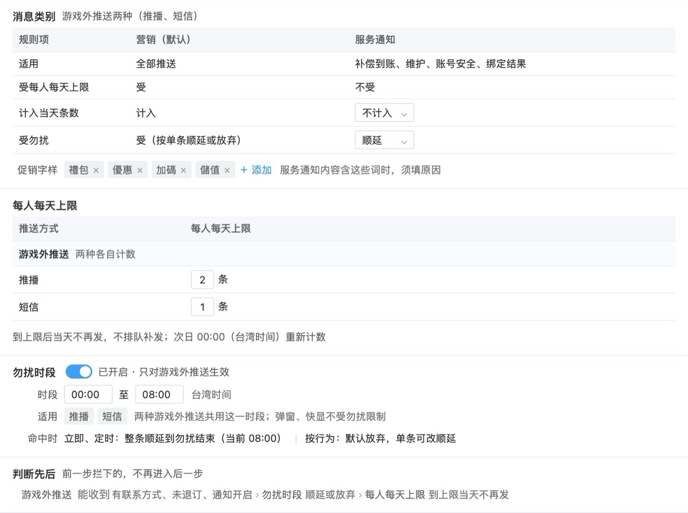
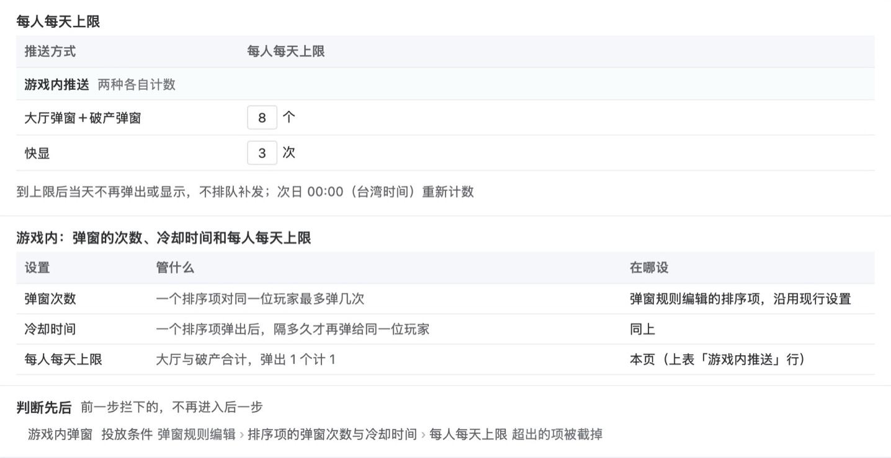
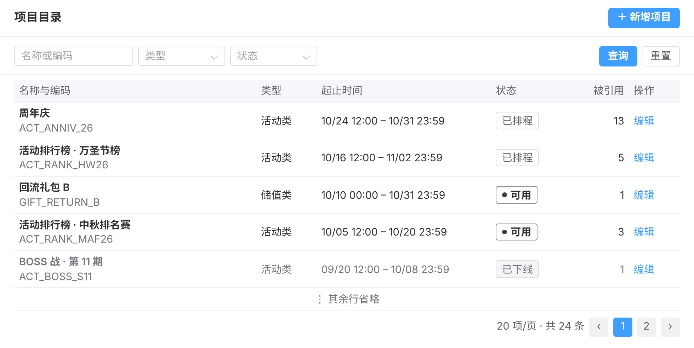
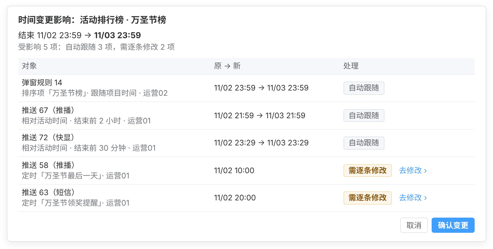

推送统一后台需求
后台结构
第一部分
游戏外推送第 1–5 页
第一部分 游戏外推送第 1 页 / 共 14 页
按玩家分群推送


业务规则
现状与改动
| 现在：运营在另一个推播工具发推播，如按价值分层（低 V、中 V、高 V、至尊卡四层）每周 20:00 分别发的固定推播，以及活动推播。 |
| 改后：运营推播只在推送统一后台新建和发送；发送对象改为按标签群组选、可加排除群组，四层价值分层改用对应的标签群组；原工具里的周期排程改为本后台的定时推送，设每天或每周重复。 |
发送对象
| 发送对象为一个或多个标签群组（见第 10 页）、全部玩家，或上传的会员编号名单；上传名单只用于立即、定时推送，如中奖、补偿名单。 |
| 选多个群组时取并集：满足任一即发送，重叠的玩家只收 1 条。 |
| 排除群组： 固定排除，不能移出：黑名单、机器人与测试账号、敏感状态账号（停权、自我限制、注销处理中） 默认排除，运营可移出：VIP 名单 运营还可再加其他群组 |
| 能收到推送的玩家： 推播：装了 App 且开启通知的玩家 短信：有有效手机号且未退订的玩家 同一设备或同一手机号只发 1 条 |
| 预计发出：群组人数扣掉排除群组得到受众，再依次扣掉收不到推送的玩家和被每人每天上限拦下的人（上限见第 3 页）；确认前逐层显示。 |
发送时间
| 推播分立即、定时、按行为三种；按行为的设置见第 2 页。 |
| 定时推送按开始发送时群组里的玩家发出。 |
防错
| 可先发给测试账号；发给全部玩家时，确认前多一步核对总人数。 |
| 发送中可停止，已发出的不撤回。 |
第一部分 游戏外推送第 2 页 / 共 14 页
按玩家行为自动推送

业务规则
现状与改动
| 现在：限时加码礼包未购买提醒在礼包后台「推荐礼包设定」页设推播时间（如还剩 2 小时）和标题，由礼包后台直接发送。 |
| 改后：这条提醒改为推送统一后台里一条按行为推播（触发行为为限时加码礼包快到期）；礼包后台的推播时间与标题改为只读，礼包的其余设定仍在原页。 |
触发与对象
| 触发行为首批 6 种：限时加码礼包快到期、玩家升级、完成任务、通行证升级、破产后未回到游戏、时间偏移（活动、礼包等项目开始或结束前后 N 小时）；新的触发行为由 RD 登记后可选。 |
| 触发条件按触发行为填，如礼包剩余几小时发送、只发给尚未购买该礼包的玩家。 |
| 生效期间从开始日期起运行；不填结束日期则长期运行。 |
| 发送对象为触发的玩家，可再限定标签群组、加排除群组，规则同第 1 页；确认前显示预计每天触发和发出的人次。 |
提醒次数与间隔
| 一次触发后最多提醒几次，默认 1 次；同一玩家任意两次提醒之间至少隔几小时，默认 24 小时，不论是否同一次触发。 |
| 提醒次数大于 1 时，后续提醒在间隔已到、且触发条件仍成立（如礼包仍未购买）时再发。 |
| 被每人每天上限拦下、勿扰放弃、因玩家在线不发的，不算一次提醒，间隔也不起算；该玩家下一次触发（如下一个礼包快到期）时照常提醒。 |
勿扰与在线
| 触发时正值勿扰时段的，放弃发送（默认）或顺延到勿扰结束，每条推送单独选。 |
| 顺延的提醒到勿扰结束时，重新判断触发条件和每人每天上限。按行为的提醒到勿扰结束时可能已失效，如礼包已过期。 |
| 玩家在线时照发或不发，每条推送单独选。 |
| 默认玩家升级、完成任务、通行证升级不发，限时加码礼包快到期、时间偏移照发；破产后未回到游戏只在玩家离线时触发。 |
| 触发时玩家在线且选了不发的，这次收不到推播；同一事件改由游戏内显示，用同一触发行为的快显，或弹出同一活动或礼包的弹窗规则；两者都没有时，系统在保存时提示运营。 |
第一部分 游戏外推送第 3 页 / 共 14 页
每人每天上限与勿扰

业务规则
消息类别
| 营销类受每人每天上限和勿扰；服务通知（补偿到账、维护、账号安全、绑定结果）不受上限，勿扰时段内默认顺延。 |
| 服务通知默认不计入当天条数；改为计入时占用当天名额，营销推送当天可收的条数相应减少。 |
上限与勿扰
| 每人每天上限：推播 2 条（沿用现行运营规范）、短信 1 条，上线后可调；两种各自计数。 |
| 到上限后当天不再发、不补发，次日 00:00（台湾时间）重新计数。 |
| 推播、短信与弹窗、快显的上限互不占用。 |
| 勿扰时段 00:00–08:00，只对推播、短信生效；立即、定时推送整条顺延到 08:00，按行为推送默认放弃。 |
| 每条推送依次判断玩家能否收到、勿扰时段、每人每天上限，前一步拦下的不进下一步。 |
例外
| 单条推送可勾选「不受每人每天上限」或「不受勿扰」，须填原因。 |
| 运营把含促销字样（禮包、優惠、加碼、儲值）的内容发为服务通知时，须填写归为服务通知的原因。 |
第一部分 游戏外推送第 4 页 / 共 14 页
推播与短信数据统计


业务规则
数据列表
| 游戏外推送数据按每条推送列出发送、到达、点击，可按所属活动筛选、导出。 |
| 每人每天收到几条：玩家每天收到几条的分布、每天多少人碰到每人每天上限、上限拦下多少人次。 |
单条推送数据
| 点一条推送进入：从受众、发送、到达到点击，每一步少了多少；另列发送后 24 小时内的登录与付费。 |
| 未发出的原因：发送前拦下的按原因分项，如没装 App、通知关闭、勿扰放弃、每人每天上限拦下；服务商未受理的另列；可导出名单。 |
| 逐人明细：推播、短信每人每条的结果与原因，可导出。 |
指标算法
| 到达率＝到达÷可确认到达的发送；iOS 旧版本 App 不能上报到达，这部分单列为「iOS 未接入」，不进分母。 |
效果参考
| 短信用「发送后 24 小时内登录」看效果；推播的登录与付费数据只作参考。玩家收到短信后多直接打开游戏，不点链接。 |
第一部分 游戏外推送第 5 页 / 共 14 页
短信

业务规则
现状与改动
| 现在：营销团队用自己的发送工具按名单发短信，短信数据在数据平台。 |
| 改后：短信改在推送统一后台新建和发送，发送对象改为按标签群组选，中奖、补偿这类一次性名单在本后台上传名单发；营销团队原有的周期排程改为本后台的定时推送；到达回执和退订直接回到本后台。 |
内容与计费
| 内文先选消息类别（营销或服务通知）；输入时显示字数与则数，超出一则时提示；营销短信自动加品牌前缀【會員通知】和退订说明。 |
| 链接可选外部网页或游戏内页面；外部网页自动换成短链，点击按人记录。 |
| 按则计费：70 字以内计 1 则；超过 70 字时每 67 字计 1 则。 |
| 品牌前缀和退订说明计入字数。 |
发送
| 发送对象、排除群组的选法同推播（第 1 页）；能收到短信的是有有效手机号且未退订的玩家。 |
| 发送时间：立即、定时或按行为，填法同推播；勿扰时段与每人每天上限见第 3 页。 |
| 确认前显示能收到短信的人数、上限拦下、预计发出人数、每条计几则和共计几则。 |
第二部分
游戏内推送第 6–9 页
第二部分 游戏内推送第 6 页 / 共 14 页
按玩家分群配置弹窗


业务规则
现状与改动
| 现在：在弹窗后台「大厅弹窗顺序设定」页配置；每条规则设弹窗类型、位置、每次最多弹出几个，对象为全部玩家或一个标签群组（要排除部分玩家须另建带排除条件的群组）；规则里的弹窗排序是按先后弹出的活动或礼包清单，每一项叫排序项，设弹出时机、弹窗次数、冷却时间。 |
| 改后：整页移入推送统一后台；新加排除群组、固定排除、弹窗预计人数、优先级、互斥组、重叠检查、当天快显提示过的排序项跳过、保存并上架前确认、实验、每人总次数（本规则对同一玩家最多弹几次）、关闭后冷却，排序项新加「弹出后终止本次后续弹窗」和不可关闭。 |
规则内容
| 每条规则选弹窗类型（活动类、储值类）和位置：大厅弹窗（进入大厅时自动弹出）、破产弹窗（玩家破产时弹出）；并设每次最多弹出几个。 |
| 每个排序项设弹出时机、弹窗次数、是否「弹出后终止本次后续弹窗」、是否不可关闭（玩家须点按钮）；排序项自己的冷却时间沿用现行设置。 |
| 优先级数字越小越先弹，1 最高。 |
| 高级设置里设互斥组、实验分组、每人总次数（本规则每弹出一次计 1 次，不论这次弹出几个排序项；按上架以来累计，或按每日、每周计）和关闭后冷却（玩家直接关掉本规则的弹窗后，隔多久本规则才再弹）。 |
对象与预计人数
| 对象为全部玩家或一个标签群组；改后加排除群组（可选多个），对象下拉加入潜在付费、潜在流失等新建标签的群组（见第 10 页）。 |
| VIP 名单、黑名单、机器人与测试账号、敏感状态账号对所有弹窗固定排除；推播、短信、快显的 VIP 名单是默认排除、可移出（见第 1 页）。 |
| 弹窗预计人数为对象减去排除群组，再减去先命中同位置、同类型（或同一互斥组）优先级更高规则的人；固定排除的玩家弹出时才扣，不从预计人数里减，旁边注明其中固定排除约多少人。 |
优先级与互斥
| 每次进入同一位置，活动类、储值类各取一条规则；放进同一互斥组的不同类型，合起来只取一条。 |
| 取哪一条看优先级：此刻对这位玩家有可弹排序项的规则里，优先级最高的一条。它的排序项用完或在冷却中时，由次高的一条接替，所以一位玩家一天里可能看到同类两条规则的排序项。 |
重叠与跳过
| 与同位置、同类型其他上架规则重叠时，显示重叠的人数、这些人弹哪一条，以及本规则与其他规则每天互相接替的人数。 |
| 规则之间用排除群组避免重叠，如回流规则排除新增玩家；仍重叠的玩家按优先级弹。 |
| 每条规则设是否跳过已提示过的排序项：当天已用快显（游戏内横幅）向这位玩家提示过同一活动或礼包时，对应的排序项不弹；默认不跳过。 |
| 勾了「弹出后终止本次后续弹窗」的排序项弹出后，同位置后面的排序项本次不弹；现有规则里的发财金、揪友同乐邀请默认勾选。 |
保存并上架
| 保存并上架前弹出确认，列出改了什么和受影响的其他规则，确认后才生效。 |
实验
| 实验把玩家分成实验组与对照组，每位玩家固定在一组；对照组的玩家改看下一条命中的规则或不弹，由运营设定。 |
第二部分 游戏内推送第 7 页 / 共 14 页
每人每天弹窗与快显上限

业务规则
上限
| 每人每天上限：大厅弹窗与破产弹窗合计 8 个、快显 3 次，两种各自计数；上线后可调。 |
| 到上限后当天不再弹出或显示，次日 00:00（台湾时间）重新计数。 |
| 被上限截掉的排序项不消耗次数与冷却，之后不补弹。 |
判断先后
| 依次判断投放条件（规则的对象、弹出时机、生效期间）、排序项的次数与冷却（沿用现行设置）、每人每天上限；超出上限的排序项被截掉。 |
例外
| 排序项可勾选「不受每人每天弹窗上限」，再选仍计入或不计入当天个数，并填原因。 |
第二部分 游戏内推送第 8 页 / 共 14 页
弹窗与快显数据统计


业务规则
整个位置
| 按位置统计大厅弹窗、破产弹窗、快显的曝光人数、曝光、点击、点击率，与前一个同样长度的周期对比；合计行的曝光人数按玩家去重。 |
| 按位次统计玩家这次进入该位置时第几个看到的弹窗，各位次的曝光与点击率；位次跨规则计，与排序项在规则里的先后无关。 |
| 改动前后对比：选操作纪录（第 14 页）里的一次改动，对比改动前后几天整个位置和各排序项的曝光与点击率。 |
| 同期有游戏发版或其他改动时提示不能单独归因，要确定效果用实验组与对照组。 |
单条规则
| 漏斗：一条规则从目标人数、进入弹窗位置、符合条件、曝光到点击，每一步少了多少。 |
| 点击后 24 小时内的领取、购买，按来源弹窗规则记录；只作参考，不画进漏斗。领取、购买还受弹窗以外的因素影响。 |
| 可拆分：按日、按小时、按平台与设备、按客户端版本、按人群、按实验组与对照组、按排序项。 |
版本
| 同一条规则每次确认保存成为一个新规则版本；两个规则版本各自生效期间的日均曝光与点击率并排对比，可恢复旧版本的设置。 |
| 规则改动或游戏发版后，旧数据照样保留，按规则版本、客户端版本分开看。 |
第二部分 游戏内推送第 9 页 / 共 14 页
快显

业务规则
现状与改动
| 现在：快显的内容与触发写死在客户端里，发给当时在线的全部玩家；数据没有后台页面可查。 |
| 改后：快显在推送统一后台配置，改内容不用发版；发送对象改为按标签群组选、加排除群组，发送时间改为在后台选立即、定时或按行为；曝光与点击在后台可查。 |
内容与对象
| 快显是游戏界面里的即时横幅，如通行证升级提示；运营在后台设横幅文字、显示位置、停留秒数和点击跳转的页面。 |
| 发送对象和排除群组的选法同推播（第 1 页），VIP 名单同样默认排除、可移出。 |
| 只显示给在线玩家：发送时不在线的玩家收不到，上线后也不补显。 |
发送时间
| 立即、定时或按行为；按行为的触发行为、提醒次数与间隔同第 2 页。 |
第三部分
两类共用第 10–14 页
第三部分 两类共用第 10 页 / 共 14 页
标签群组

业务规则
现状与改动
| 现在：在会员标签设定里用会员标签按且、或、排除组合出一组玩家，随标签数据定时更新。 |
| 改后：会员标签设定加群组之间取交集，如「回流且潜在付费」，每个条件显示人数；在用的群组不能停用或删除，修改时保存前列出受影响的推播、短信、快显和弹窗规则。 |
新建标签
| 新建 6 个标签： · 潜在付费：注册第 7–60 天、从未储值、近 14 天押注合计不低于 20,000（游戏内货币） · 潜在流失两档：近 14 天登录 2–3 天；近 14 天登录 1 天 · 近 7 天发生过破产 · 新增玩家两档：注册次日未再登录；注册第 3 天未再登录 |
第三部分 两类共用第 11 页 / 共 14 页
概览

业务规则
游戏外推送
| 推播、短信的发送、到达、点击、到达人数和人均每天收到几条，与前一个同样长度的周期对比；明细见第 4 页。 |
游戏内推送
| 弹窗、快显的曝光、曝光人数、点击、点击率和人均每天弹窗曝光几个，与前一个同样长度的周期对比；明细见第 8 页。 |
指标算法
| 游戏外推送从发送算起，点击率＝点击÷发送；游戏内推送从曝光算起，点击率＝点击÷曝光；两层分开统计。 |
第三部分 两类共用第 12 页 / 共 14 页
项目目录


业务规则
项目登记
| 项目目录是活动与礼包的登记表：名称、编码、类型、起止时间、状态（已排程、可用、已下线）。 |
| 运营登记新的活动或礼包后，弹窗排序项和推播、快显的点击跳转可以选到它；推播、短信、快显新建时都要选所属活动（项目目录里的一项），或选「不属于活动」；弹窗排序项选的活动或礼包就是它的所属活动。 |
| 每个项目显示被多少条推播、短信、快显和弹窗规则引用。 |
改期联动
| 改起止时间前，列出受影响的推播、短信、快显和弹窗规则；其中时间写成具体时刻的，逐条选择跟着平移或保持，也可全部平移；选完才能确认。 |
| 按相对活动时间设置的推播、短信、快显（如「结束前 2 小时」）和跟随项目时间的弹窗排序项，自动跟随新的起止时间。 |
| 改起止时间只改这些推播、短信、快显和弹窗的时间，不改活动本身的开始与结束；活动自己的起止时间，要运营在活动配置里另行修改。 |
第三部分 两类共用第 13 页 / 共 14 页
玩家查询

业务规则
现状与改动
| 现在：弹窗后台的「玩家弹窗顺序查询」按会员编号、会员昵称或手机号码查一位玩家，显示玩家资料和大厅、破产两张弹窗顺序表。 |
| 改后：整页移入推送统一后台，改为玩家查询；加推播、短信、弹窗、快显各自能否收到和今天已收几条，以及近 30 天的收到记录；手机号码改为中间打码显示。 |
查询与结果
| 按会员编号、会员昵称或手机号码查一位玩家；查到后显示玩家资料（标签、最后登录、平台与版本、在线状态）。 |
| 推播、短信、弹窗、快显各自能否收到，不能时写原因（如通知关闭、没有手机号）；今天已收几条、上限多少、最近一次收到的时间。 |
| 近 30 天推播、短信、快显的每一条和每次弹窗的结果与原因，如被每人每天上限拦下时写明名额被哪几条占用；弹窗可展开看每个排序项弹没弹。 |
第三部分 两类共用第 14 页 / 共 14 页
操作纪录
| 时间 | 操作人 | 推送方式 | 对象 | 操作 | 改动内容 |
|---|---|---|---|---|---|
| 10/12 15:04 | 运营01 | 推播 | 推送 43 月月抽开奖提醒 | 停止 | 已发出 1,050 条，不撤回；其余不再发送 |
| 10/12 14:36 | 运营02 | 弹窗 | 弹窗 13 活动类·回流 | 编辑 | 弹窗排序：回流任务 第 7 → 第 1 |
| 10/12 14:30 | 系统 | 推播 | 推送 44 限时挑战开启 | 系统状态变化 | 服务商未受理：发送中 → 发送失败（9,120 条） |
| 10/09 16:12 | 运营02 | 推播 | 推送 31 限时加码礼包未购买提醒 | 编辑 | 改了内文 |
业务规则
记录内容
| 每条记录含时间、操作人、推送方式、对象、操作、改动内容。 |
| 改内文这类操作可展开，对照改前与改后。 |
| 系统自动发生的状态变化，如到时开始发送、发送失败、生效期间结束，也记录，操作人记为「系统」。 |
记录范围
| 推播、短信、快显与弹窗规则的新建、编辑、发送、停止，每人每天上限与勿扰的修改，以及测试发送，每次各记一条；记录只增不改不删。 |
| 改项目起止时间后，随之变动的推播、短信、快显和弹窗规则各记一条「随项目时间变更」。 |
查询导出
| 按日期、操作人、推送方式、操作、对象名称或编号查询，可导出。 |
账号角色
| 账号分运营、客服、只读三种角色：运营可新建与发送，客服可查玩家与操作纪录，只读账号只能查看。 |